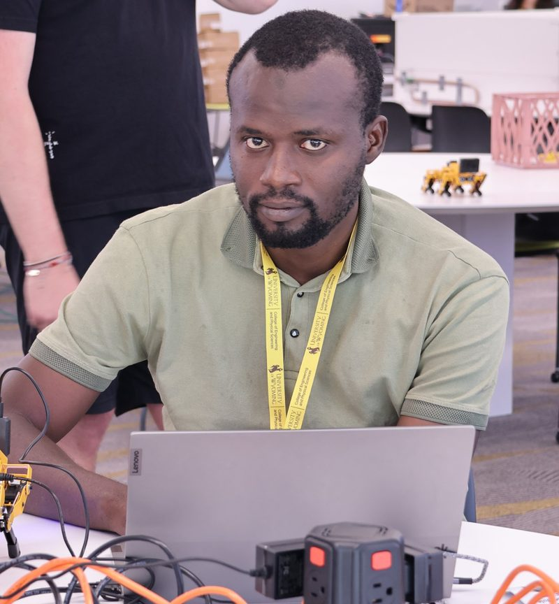

Par un enseignant qui a préparé des élèves aux examens AP de maths et de physique, et qui forme aujourd'hui les professeurs de maths d'un programme américain. Des cours complets en ligne, des exercices corrigés, des quiz qui se corrigent tout seuls et un rapport de progrès chaque mois pour les parents. L'unité 1 de chaque cours AP et un test blanc SAT complet sont gratuits : essayez avant de vous engager.
Aucun paiement pour l'essai. Il suffit d'un nom.

À partir de 2018, il a enseigné dans le programme américain de l'école sénégalo-américaine SABS : il y a préparé les élèves aux examens AP de mathématiques et de physique et dirigé le département de mathématiques. Aujourd'hui, il y accompagne les nouveaux professeurs de mathématiques recrutés dans ce programme. Docteur en physique de l'Université Cheikh Anta Diop de Dakar, il enseigne aussi à l'université, en école d'ingénieurs et en classes préparatoires. Il a construit cette plateforme et en vérifie chaque leçon, chaque exercice et chaque quiz.
Le programme suit les thèmes de l'examen AP ou du SAT, dans un ordre pensé pour progresser. Les cours sont en anglais, comme l'examen.
Pour chaque leçon : une version à trous que l'élève remplit, et la version complète pour se corriger.
Plusieurs fiches par leçon, au format de l'examen : QCM, questions ouvertes, questions sur graphique, avec ou sans calculatrice.
Chaque réponse est corrigée avec une explication. L'élève sait tout de suite ce qu'il doit revoir.
Self checks, tests d'unité et tests au format AP, en temps limité comme le jour de l'examen. Pour le SAT : tests blancs adaptatifs en deux modules, comme sur Bluebook, avec un score estimé sur 800.
Une heure en visioconférence pour poser ses questions au professeur.
Un groupe WhatsApp avec le professeur, pour les questions entre deux séances.
Les résultats de chaque quiz et de chaque test arrivent au professeur. À la fin de chaque mois, vous recevez un rapport clair sur WhatsApp ou par e-mail.
L'unité 1 de chaque cours AP est déjà disponible et gratuite. Pour le SAT, la compétence 1.1 et le test blanc 1 sont gratuits. Les dates ci-dessous sont celles de mise en ligne des parties suivantes.
Paiement par Wave ou Orange Money. L'accès s'ouvre dès que le paiement est confirmé, et un reçu vous est envoyé.
Ouvrez la plateforme, entrez le nom de l'élève et travaillez l'unité 1.
Dans « My access », choisissez le cours et envoyez le montant par Wave ou Orange Money.
L'élève reçoit aussitôt un code personnel, valable sur tous ses appareils.
Après confirmation du paiement, toutes les unités s'ouvrent, et vous recevez le reçu.
Non. AP Math Online est une préparation indépendante. Le programme suit les thèmes des examens publiés par le College Board, mais le College Board n'est pas affilié à cette plateforme et ne la cautionne pas.
L'AP est un examen de fin d'année sur un cours de niveau université (Precalculus ou Calculus), noté de 1 à 5. Le SAT est un test d'admission aux universités américaines ; sa partie maths, notée de 200 à 800, porte sur l'algèbre, l'analyse de données, la géométrie et la trigonométrie du lycée. Beaucoup d'élèves préparent les deux.
L'inscription se fait sur le site du College Board, environ cinq semaines avant la date choisie. Le test se passe sur ordinateur dans un centre agréé, avec l'application Bluebook. Prochaines dates : 5 décembre 2026, 6 mars, 1er mai et 5 juin 2027.
L'inscription à l'examen ne se fait pas ici : elle se fait auprès d'un établissement autorisé à faire passer les examens AP, le plus souvent l'école de l'élève, par son coordinateur AP. Renseignez-vous tôt dans l'année.
Oui : la plateforme sert alors de complément. L'élève y retrouve les leçons expliquées pas à pas, s'entraîne avec des corrigés et vérifie son niveau avec les quiz et les tests, au rythme de sa classe.
En anglais, comme l'examen. Les échanges avec le professeur peuvent se faire en français ou en anglais.
Un téléphone, une tablette ou un ordinateur avec internet. Pour les questions marquées « Calculator », une calculatrice graphique (ou l'application gratuite Desmos pour s'entraîner). Au SAT, Desmos est intégré à Bluebook.
Personne ne peut garantir un score. Ce que nous garantissons, c'est un programme complet, un travail régulier suivi par le professeur, et une information claire pour les parents tout au long de l'année.
L'unité 1 complète de chaque cours AP, et pour le SAT une compétence et un test blanc complet avec score estimé. Vous verrez la qualité du travail avant de payer quoi que ce soit.